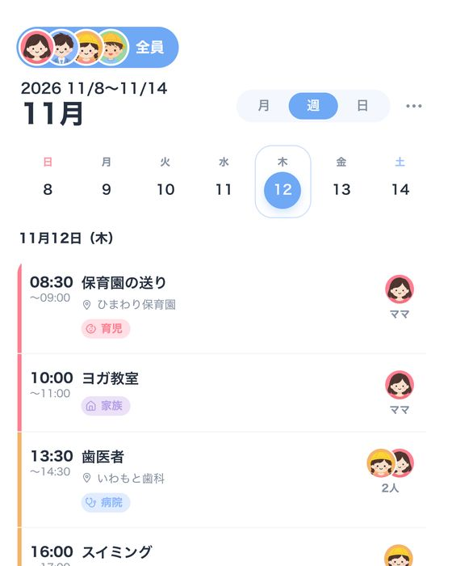
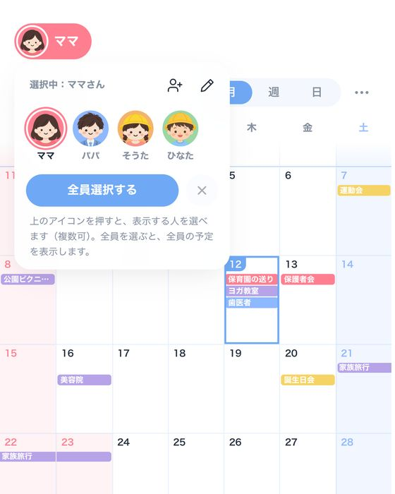
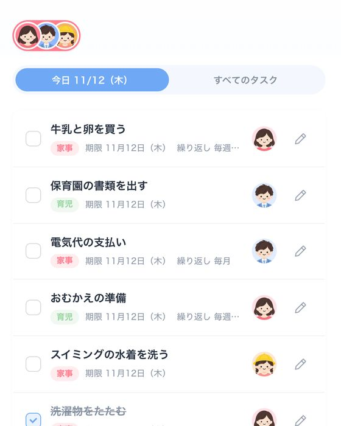
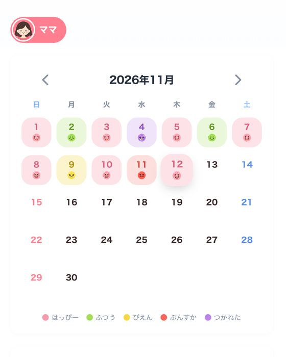

家族の予定・タスク・気持ちを、ひとつに。
Famlog（ファムログ）は、家族みんなの予定・タスク・毎日の気持ちを、ひとつにまとめて管理できるシンプルなカレンダーアプリです。アカウント登録をしなくても、すぐに使い始められます。
iPhone 版を App Store で配信中です。Android 版は準備中です。
家族の毎日が、ひと目でわかる
「今日はだれが保育園のおむかえ？」「習い事は何曜日だっけ？」をすぐに確認できます。

見やすいカレンダー
カテゴリごとに色分けして、月・週・日の表示をワンタップで切り替え。メンバーのアイコンで、だれの予定かすぐわかります。

家族みんなで共有
招待コードを送るだけで、家族と同じカレンダーを一緒に使えます。表示する人を選んで、その人の予定だけを見ることもできます。

家族のタスク
期限・担当・優先度を決めて、やることを共有。「牛乳を買う」のような繰り返しのタスクにも対応しています。

今日の気持ち
5つの顔から今日の気分を選んで、ひとことメモを添えるだけ。1か月の気持ちを、あとから振り返れます。
安心してお使いいただくために
家族の大切な記録を預かるアプリとして、データの扱いを大切にしています。
- 広告はありません。トラッキングもしていません
- グループの予定は、招待した人にだけ表示されます
- アカウントを登録すると、機種変更のあとも記録を引き継げます
- アカウントは、アプリの中からいつでも削除できます
お困りのときは
よくある質問と、お問い合わせフォームをご用意しています。